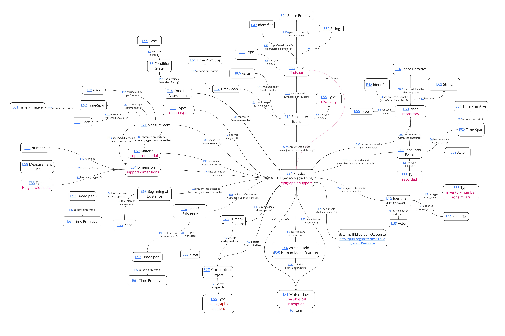

The purpose of this ontology is to enable the integration of diverse epigraphic datasets, although its success depends in turn upon the use by individual projects of data standards and published controlled vocabularies (whether those provided by the FAIR Epigraphy project, by EAGLE, the Getty AAT, or any other). The ontology is based upon CIDOC-CRM and its various extensions. CIDOC allows for extremely detailed data recording and linking and, because it is designed for cultural heritage and is event-based, it is well suited to capture the full epigraphic knowledge graph, from object description through to study and publication. However, most epigraphic projects will not require most of the granularity offered by the full CIDOC-CRM, and will only need a very limited number of nodes in the graph (i.e. individual data points). Consequently, although we attempt to model the epigraphic knowledge graph as fully as possible in order to allow for the maximum flexibility in the future, we have prioritised the principal elements of the epigraphic knowledge graph, i.e. those which we expect to be most commonly included in a typical epigraphic dataset, and we have in turn endeavoured to simplify the relevant parts of the knowledge graph to make things easier for the user. The EpOnt classes and associated properties are in many cases therefore explicitly intended as short-cuts of a longer and more complex path of relationships available in the full CIDOC-CRM, and in many cases the shortcut properties exist only for that reason.
Select any class or property from the panel to explore its full specification, CIDOC-CRM alignment, EpiDoc mapping, and applicable properties.
https://ontology.inscriptiones.org/epont/This ontology builds upon the earlier work undertaken by many members of the epigraphic community (and beyond). In particular, it builds firstly upon the prototype ontology developed in the working paper ‘Modeling Epigraphy with an Ontology’, produced by a group of some 30 epigraphers, associated with the ontology working group of Epigraphy.Info and published online in Zenodo in March 2021. This published an initial and deliberately simple ontology under the domain of ‘epont’, made available at https://w3id.org/epont/ontology/ [Note: w3id is currently not functional; the original OWL file can be found directly at https://github.com/PietroLiuzzo/epiont]. We have chosen to re-use the ‘epont’ prefix, with the agreement of its primary maintainer, Pietro Liuzzo. Secondly, this ontology owes a very great deal to the CIDOC CRMtex extension, developed by Achille Felicetti and Francesca Murano (and Pavlos Fafalios for version 2.0). CRMtex was specifically developed to support the modelling of ancient texts, and has undergone notable evolution from v.1 to the current v.2 (2023). CRMtex, however, has a slightly broader remit than epigraphy alone, and while we have found it fundamental to much of the development of this model, there are points of intellectual divergence and areas which remain largely undeveloped in the CRMtex. To that end, we have additionally found the CRMsci (scientific observation) model of use for modelling the study of the physical inscription and the inscribed object, and the more recent LRMoo model for attempting to model the relationship of the original inscribed text to transcriptions and editions of that text.
The model has been primarily developed by Jonathan Prag and Imran Asif, over the period 2024-2026. It was discussed intensively at a workshop in Oxford in February 2025, with the presence and support of John Bodel, Charles Crowther, Silvia Evangelisti, Petra Hermankova, Marietta Horster, Pietro Liuzzo, Andrew Meadows, Alex Mullen, Simona Stoyanova and Scott Vanderbilt. It has been presented at workshops in Oxford and Aarhus, and we are extremely grateful for all the feedback received to date. It remains very much a work-in-progress.
Individual properties and classes in this model fall broadly into one of four categories:
Instances of (4) are deliberately few. Instances of (2) inevitably reflect a degree of domain/subject specificity, which may or may not be thought appropriate.
Although the EpOnt ontology describes a single complex knowledge graph, which all hinges around the physical instance of a single inscription, it may be more helpful to think of it in a more compartmentalised way, reflecting different parts of the Epigraphic datasphere. These can be divided up as follows:
The general approach can be illustrated with reference to (1), the description of the epigraphic support, that is, the physical object on which the actual inscription was realised. The graph below illustrates the potential range of description that might be employed, entirely within CIDOC, to describe the inscribed object, as an object. But, notwithstanding the complexity of the graph, the average epigraphic dataset is likely to record only half-a-dozen datapoints: object type, dimensions, material, findspot, current location, and possibly its date (although most projects will record the date of the inscription, without distinguishing this explicitly from the date of the underlying object). Consequently, while the graph illustrates how one might record all aspects of the recording of an object, the information about it, and its provenance history (without pretending to cover all of this in full), the typical epigraphic project is likely only to need a handful of properties and classes. Furthermore, this module exemplifies the role of short-cuts in the model. Typically, an epigraphic project will state, e.g., ‘inscription X consists of material Y’, whereas more correctly, this would be ‘object Z, which bears inscription X, consists of material Y’. By formally creating a property ‘has support material’, which is explicitly a short-cut of the full CIDOC-CRM-based path from inscribed text to text-carrying object to object material, the EpOnt ontology can mirror the data models of typical projects while simultaneously capturing the greater complexity of the data. This allows, for instance, for future integration of more data about the object in question, whether in a museum record or elsewhere. The granularity of the graph further illustrates that, should a project also maintain a useable record of who observed the object at that location and when, or even details about materials analysis that was undertaken of the object, this can also be directly captured in the same model.

Anyone wishing to contribute can do so either by contacting the authors or creating an issue via GitHub.